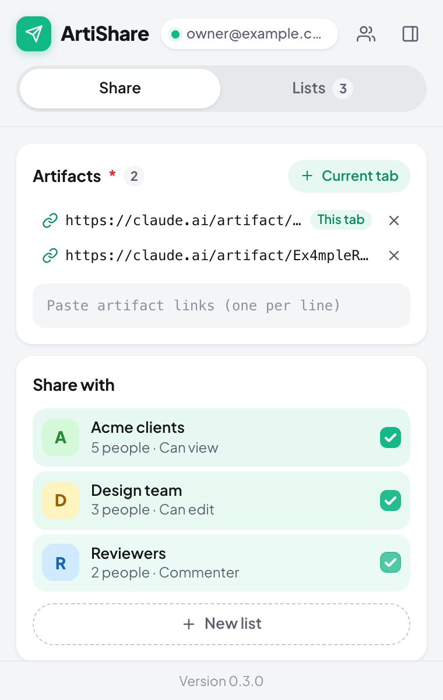
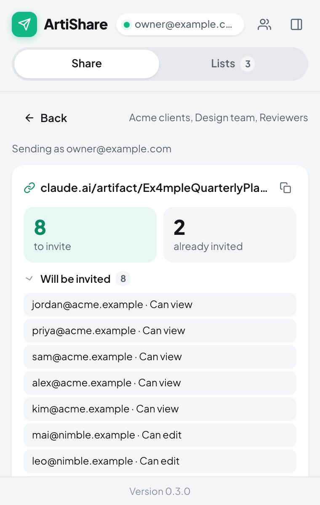
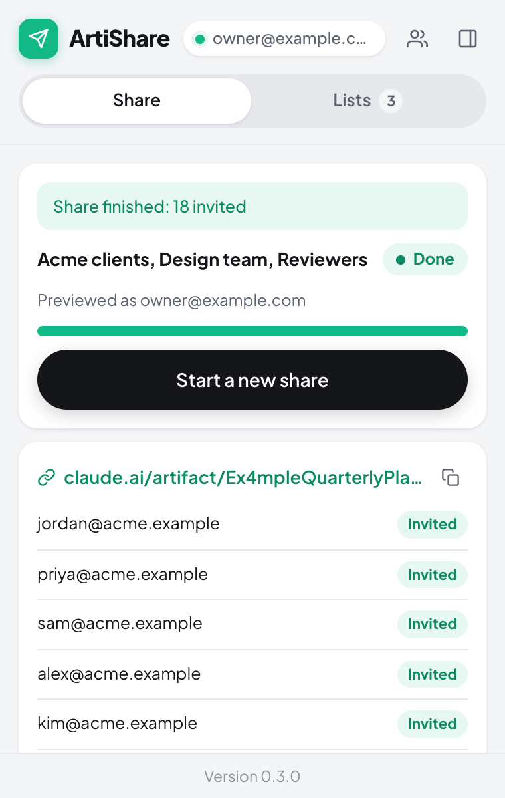

Share a claude.ai artifact with a whole group in a few clicks.
Save the email addresses you share with often as lists, each with its own permission. Then paste one or more artifact links, tick the lists, and ArtiShare sends the invitations. You don't add people one by one in the Share menu, and you don't have to make the artifact public.
-

Pick artifacts and lists. -

Preview who gets invited. Nothing is sent yet. -

Follow each invite as it goes out.
How it works
- Open claude.ai in Chrome, sign in, and click the ArtiShare icon to open the popup. Prefer it beside the page? The Open in side panel icon moves it there.
- In Lists, give a list a name, paste the email addresses and pick a permission: can view, can comment or can edit.
- In Share, add artifact links (or the claude.ai tab you're on) and tick the lists to share with.
- Click Preview to see who will be invited and who already has an invitation. Then click Send.
Good to know
- Your own address is skipped, and so is anyone who already has an invitation.
- If someone is in two lists, they get the higher of the two permissions.
- On an artifact, the optional Manage access icon in the header shows who is already invited, and lets you change their permission or remove their invitation.
- Invites go out one at a time. When claude.ai asks it to slow down, the run waits and retries. You can stop a run and resume it later.
- Your lists stay in your browser. ArtiShare talks only to claude.ai, from your own signed-in tab, and has no analytics. Read the privacy policy.
Support
Something not working? Open an issue on GitHub. Please include:
- the ArtiShare version, shown at the bottom of the popup;
- what you clicked, and what you expected to happen;
- the reason shown next to any invite marked Failed.
Issues are public, so leave out artifact links and other people's email addresses.
Common problems
- "Not signed in" or "You are signed out of claude.ai." Open claude.ai in the same Chrome profile and sign in with the account that owns the artifact, then try again.
- "The signed-in account changed." A run stays tied to the claude.ai account you used for Preview. Sign back in as that account, then click Resume.
- An artifact stops partway. claude.ai allows at most 50 people from outside your organization per artifact, and pending invitations count toward it.
- The run stops with invites still pending. Your account has reached claude.ai's daily invitation limit. Click Resume the next day.
- An artifact can't be shared at all. claude.ai doesn't share artifacts that connect to other websites by email. On Enterprise plans, an admin must first turn on email invitations outside your organization.
Email sharing on claude.ai is in beta and has no public API. ArtiShare uses the same requests as the Share menu, so a change on claude.ai's side can break it. If invites suddenly start failing, please open an issue.